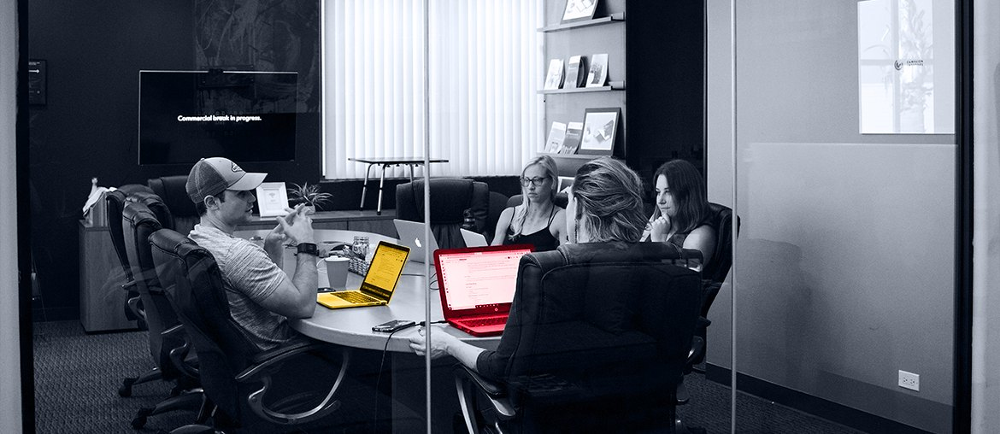
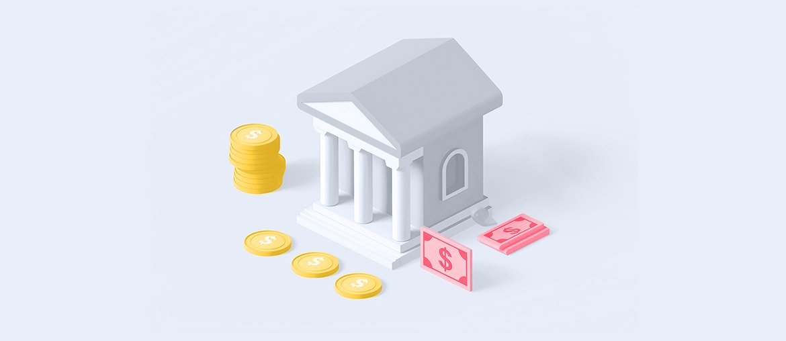

Scope one workflow
Map one efficiency workflow across Product, Client Delivery, and Engineering, then turn it into user stories and acceptance checks.
VestmarkONE already carries portfolio management, trading, compliance, reporting, and advisor workflows. Our proposal is simple: add a small team that turns process ideas into safe, tested product changes.
We saw the Business Analyst search for the Efficiencies team. It points to automation, AI tools, and cross-team requirements work that cannot wait for one hire.
That BA role says Vestmark is turning internal process work into product and operations changes. The hard part is not finding ideas; it is turning trading, rebalancing, reporting, and client delivery needs into clear work for engineering. If that gap stays open, useful automation can sit in notes while teams keep doing manual checks. A short pod can help Vestmark move one efficiency stream from requirements to release.
Engagement model: a dedicated squad under Vestmark's Product or Engineering lead.
Map one efficiency workflow across Product, Client Delivery, and Engineering, then turn it into user stories and acceptance checks.
Build the first automation or platform change with Java or .NET services and a React or Angular front end.
Add regression tests around trading, rebalancing, reporting, and restrictions, so release risk stays visible each week.
Demo working changes weekly, close feedback with your BA, and leave clean handoff notes for the internal team.

Elinext built dashboard features for a securities-processing platform. The team worked with the client's product team and kept releases on time.
Read case study
Elinext helped test a banking web app that handled high volumes of financial transactions. The work improved coverage and shortened delivery cycles.
Read case study